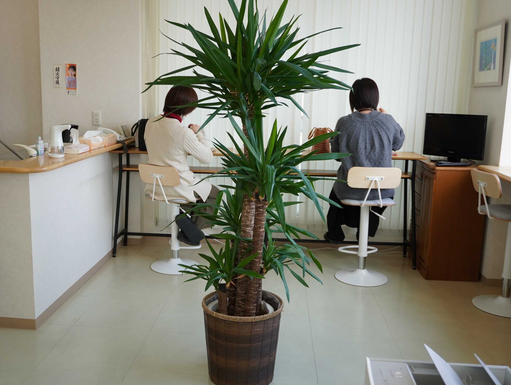

経営管理本部ってどんなとこ？

「縁の下の力持ち」
経営管理本部の業務内容 ～ WORKS ～
経営管理部は、経理・財務を始めとした間接部門の集合体であり、いわゆる「縁の下の力持ち」です。
人事部門では、採用活動や人事評価制度の策定等、組織を活性化させていくために必要な施策や環境づくりを行っています。
総務部門では、コンプライアンスへの取組等、従業員が快適に働くことができる労働環境づくりを日々心掛け活動しています。
経理部門では、従業員の給与、経費の精算、銀行への入出金等、会社運営に必要なお金の管理を行っています。
情報システム部門では、セキュリティー管理や業務の効率化・最適化を目指し、社内システムのＤＸ化に取り組んでいます。
経営管理本部の取り組み ～ ACTIVE ～
単に言われたことを、日々の定例的な業務をやるだけではなく、時代の変化、働き方の変化に対応し、健全な職場環境づくりに取り組んでいます。